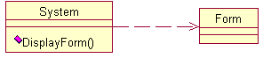
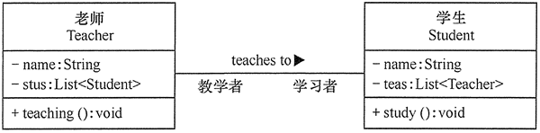
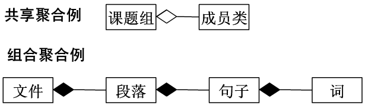
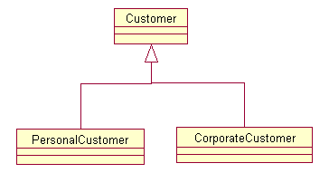
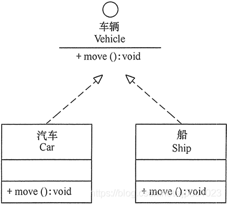

类与类之间的关系有依赖关系，关联关系，泛化关系和实现关系。
高质量的代码要低耦合、高内聚…
类与类之间的关系
依赖关系
依赖关系是一种使用关系，它是对象之间耦合度最弱的一种关联方式，是临时性的关联。在代码中，某个类的方法通过局部变量、方法的参数或者对静态方法的调用来访问另一个类（被依赖类）中的某些方法来完成一些职责。


关联关系
关联关系是对象之间的一种引用关系，用于表示一类对象与另一类对象之间的联系，如老师和学生、师傅和徒弟、丈夫和妻子等。关联关系是类与类之间最常用的一种关系，分为一般关联关系、聚合关系和组合关系。我们先介绍一般关联。
特点：
1：是一种引用关系
2：可以是双向的
3：可以是单向的


组合和聚合关系
一种“整体与成员”的关系。表示整体类的那一端增加一个菱形框。
组合：整体和成员共存，成员不能脱离整体单独存在，一个成员只能属于一个整体
聚合：整体和成员可以分别存在，一个成员可以是多个整体的成员


泛化
-泛化关系是继承机制中产生的类与类之间的关系
-“is a part of”关系：定义一般事物和特殊事物之间的关系
特点：
1：是对象间耦合度最大的一种关系
2：是一种继承关系


实现关系
实现关系是接口与实现类之间的关系。在这种关系中，类实现了接口，类中的操作实现了接口中所声明的所有的抽象操作。
特点：
1：耦合度最大的一种关系
2：是一种继承关系


内聚与耦合
耦合是多个模块之间的依赖关系，而低耦合指的就是多个模块之间的依赖要尽可能的低。耦合度越低，那么意味着对其他模块依赖度越低，尽量在其他模块出问题的时候，自己开发的模块不会出问题，少依赖别人。
内聚，指的是项目各个模块之间做的事情越单一越好，争取一个模块只做一件事，这就是高内聚。一个模块只做一件事，其他人使用该模块就更方便，方便复用。
低耦合就是少依赖其他模块，高内聚就是一个模块尽量只做一件事。